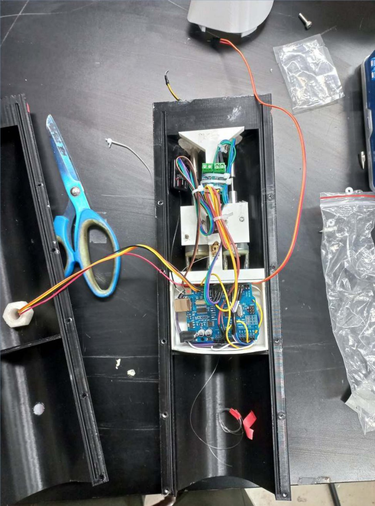
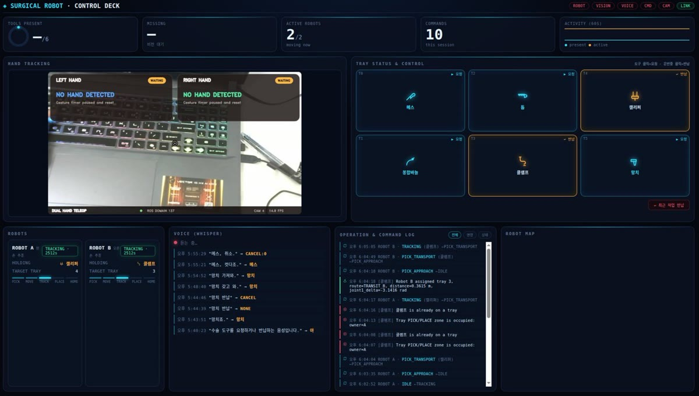
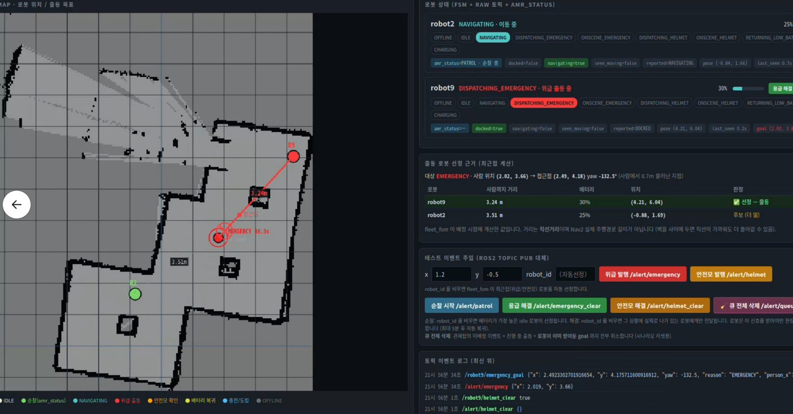

Doosan M0609 · OnRobot RG2 · RealSense · RTX 4060 Laptop(8GB) · 5인 팀 · 26.07.30~26.08.12
이전 협동로봇 프로젝트에서 교시좌표를 일일이 지정해야 했던 팀 경험에서, 자연어 지시로 물체를 집어 정리하는 마트 계산대 작업을 목표로 잡았습니다.
처음 다루는 MoveIt(로봇 모션플래닝 프레임워크)과 GraspGenX(물체를 집을 자세를 생성하는 딥러닝 모델)를 공식 문서와 오픈소스 예제로 익히며 5인 팀에서 로봇 구동과 통합을 맡았습니다(공동작업).
- 판단·동작 두 시스템 각자 기능 구현
- 통합본으로 실기 확인
본인 담당
- GPU 메모리 대응(GraspGenX 후보 수 조정·YOLO 노드 누적 정리)
- 실물 그리퍼 치수를 직접 재서 파지 모델과 맞춤
- 구동 중 사람이 손을 넣으면 멈추고 다시 계획하는 동작 연결
과정 자세히 보기 →
ERP42 4륜 전기차 · 팀 MTP(충남대) · 팀장 · 24.08~25.11
2025 대학생 창작모빌리티 경진대회 무인모빌리티 부문에서, 예선 10분·본선 15분의 한 번의 주행 동안 인지가 일부 실패해도 멈추지 않고 완주하는 자율주행 시스템을 목표로 삼았습니다.
3인 팀의 팀장으로 ERP42 4륜 전기차와 LiDAR(레이저로 주변 거리를 재는 센서)·RTK-GPS(보정 신호로 오차를 줄인 GPS)·IMU(기울기·가속도 센서)를 처음 다뤘습니다.
팀에서 먼저 휠 인코더로 이동거리와 회전각을 계산하는 오도메트리(바퀴 회전으로 위치를 추정하는 계산) 노드를 직접 구현했습니다(공동작업).
- 센서 연결과 휠 오도메트리 구현
- EKF(여러 센서를 합쳐 위치를 추정하는 필터) 측위 위에 waypoint(경로점) 경로추종
- 실차 반복 테스트
본인 담당
- 팀장(개발 일정 수립·공유, 실습 환경 구성, 인수인계 문서화)
- waypoint 경로추종
- 명령 중재 판단 노드
키워드- 팀장
- ERP42
- waypoint 경로추종
- EKF 센서퓨전
- 실차 반복 테스트
과정 자세히 보기 → · ▶ 대회 참고 영상 (우리 팀 아님 · 본선 출전 팀 주행)

학사 졸업프로젝트 · Arduino Uno · 3인 팀 · 24.08~25.08
상용 수난 구조장비는 비싸고 조작 숙련이 필요해 비전문가가 바로 쓰기 어렵습니다. 그래서 누구나 던져서 쓰고, 익수자에게 스스로 다가가는 저비용 구명보트를 목표로 삼았습니다.
아두이노와 열화상 센서(AMG8833, 8×8 격자로 온도를 재는 센서)로 모터 구동과 신호 처리를 다뤘습니다.
- 구동방식 토의로 2모터 차동 구동 결정
- 센서·RC·모터 코드 통합
- 선체 배치 점검과 구동·발사 시험
구동방식을 정하는 회의에서 후보마다 걸리는 점을 비교했습니다.
- 프로펠러 하나와 방향키(키): 물에 떨어질 때의 충격으로 키가 부러질 위험
- BLDC 모터(브러시 없는 고출력 모터): 아두이노로 제어하기 까다로움
- 방수 모터: 성능이 떨어짐
그래서 일반 DC 모터 2개에 샤프트를 연결하고, 좌우 모터 출력을 달리해 방향을 트는 차동 조향을 택했습니다.
팀은 제작비 약 51만 원으로 완성했고, 교내 산학연 캡스톤디자인 아이디어 최우수상과 졸업작품 경진대회 장려상을 받았습니다.
본인 담당
- 좌우 DC 모터 차동 제어
- 아두이노 회로 구성
- 설계보고서 문서화
키워드- Arduino
- DC 모터 차동 제어
- 열화상 센서 추적
- 자율·RC 수동 전환
- 교내 수상 2회
과정 자세히 보기 → · 프로젝트 기록

Dual Doosan M0609 · Isaac Sim · 3인 팀 · 팀장 · 26.06.17~26.06.30
집도의의 손 동작과 음성 명령에 따라 협동로봇 두 대가 수술도구를 전달하는 시뮬레이션(Isaac Sim)입니다.
수술 후 기구 파편이 환자 체내에 남는 사고 보도를 계기로, 팀 회의에서 수술도구 분실과 교차 오염을 줄이는 협동로봇 보조를 주제로 골랐습니다.
- 음성 명령 트레이 이송·손 제스처 추적 단위 테스트
- 두 로봇 배치와 도구 인식 연결
- 손 추적·음성 명령 HRI(사람-로봇 상호작용) 통합 검증
본인 담당
- 팀장
- 시스템 구조 설계
- Isaac Sim Replicator로 가상 장면의 학습 이미지(합성 데이터) 생성과 도구 인식 YOLO 학습
키워드- 팀장
- Isaac Sim
- Replicator 합성 데이터
- 듀얼 협동로봇
- YOLO 도구 인식
과정 자세히 보기 → · ▶ 1분 시연 영상 · 코드

AMR 2대 · 천장 웹캠 2대 · 5인 팀 · 팀장 · 26.07.01~26.07.14
제조 현장에서 안전사고 발견과 초동 대응이 늦어지는 문제를 줄이려고, 천장 카메라 감지와 자율주행 로봇을 잇는 순찰·관제 시스템을 만들었습니다.
쓰러짐이나 안전모 미착용이 감지되면 가장 가까운 로봇이 자동으로 출동하는 시나리오입니다.
- 모형 RC카 추적 미니 프로젝트
- 관제 FSM 설계와 감지·주행 모듈 구현
- 실기 통합, 부트캠프 후 통신 구조 분석
본인 담당
- 팀장
- 관제 FSM 설계와 디버깅 — heartbeat(로봇이 살아 있는지 주기적으로 확인하는 신호) 기반 로봇 상태 관리·우선순위 선점(응급·안전모 신호가 오면 하던 순찰을 멈추고 먼저 출동)
- 쓰러짐 판정 규칙·메시지 전달 정책 설계와 디버깅
- 실기에서 조정한 파라미터를 launch(실행 스크립트)에서 yaml(설정 파일)로 분리
키워드- 팀장
- TurtleBot4
- 관제 FSM
- 쓰러짐·안전모 감지
- 통신 구조 분석
과정 자세히 보기 → · ▶ 1분 시연 영상 · 코드

Doosan M0609 + OnRobot RG2 · 5인 팀 · 26.07.15~26.07.29
부트캠프 과제 "ROS 2를 활용한 로봇 자동화 공정 시스템 구현"을 받아 핸드드립 공정을 만들었습니다. 사람이 부으면 손이 흔들려 매번 편차가 큰 나선 푸어링(물 붓기)을 협동로봇이 같은 궤적으로 재현합니다.
카메라 없이 협동로봇의 힘 센서와 그리퍼 접점 신호만으로 원두 계량부터 서빙까지 자동화하는 것이 목표였습니다.
- 주제 검토와 공정 확정
- 공정별 교시 좌표 티칭과 모션 구현
- 전체 시퀀스 통합과 최종 시연 리허설
본인 담당 그리퍼 예외 상황 처리 및 정상 공정 복귀 알고리즘(발표 역할표 기준) · 작업 환경 도면(공정 배치·그리퍼 치수) 작성
키워드- Doosan M0609
- OnRobot RG2
- 카메라 없는 공정
- 주제 전환
- 작업 환경 도면
과정 자세히 보기 → · ▶ 1분 시연 영상 · 코드